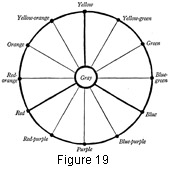

1930—Millinery Processes
by Carlotta M. Brown
COLOR
No attempt is made to go into a detailed discussion of color in "Millinery Processes," but as line and color in hat selection are so closely related that they may not be separated, a few suggestions in the study of color for the individual may be helpful.
- Primary colors: red, blue, and yellow.
- Secondary colors: orange, green, and purple.
- Intermediate colors: yellow-green, blue-green, blue-purple, red-purple, red-orange, and yellow-orange.
Secondary colors are obtained by mixing two primary colors in equal amounts. Yellow and blue when they are combined in equal parts will produce green.
Intermediate colors are obtained by mixing a primary and a secondary color in equal amounts. Green and blue in equal parts will produce blue-green.
Complementary colors are those standing opposite each other on the color chart.
Importance of Color
Color is most important in the choice of a hat. It should be used just as design is used: to bring out the best attributes and to keep the less attractive in the background.
Design principles are as important when working with color as in the selection of line, and equal emphasis should be placed on each; for no matter how graceful the lines of the hat may be, if the color is startling or unlovely the eye is immediately caught by the unattractive color, and the effect of line is lost.
It often is difficult to make a choice of color when only one hat a season may be purchased. The only safe course in such a case is to go over the wardrobe painstakingly and decide on the hat of neutral coloring, which, although not matching any particular costume, will at least be in harmony with them all.
Properties of Color
The individual must understand what is meant by properties, or qualities, of color before an intelligent choice may be made.
- Hue or name of the color: as, green or blue.
- Value of the color: lightness or darkness.
- Intensity of the color: brightness or dullness.
Tints are the light values of a normal color; shades are the low values.
Intense colors are too conspicuous for general wear, and should be purchased only where more than one hat may be worn during the season. These colors can be worn only by the more youthful group, whose skins are fresh and of good coloring; and even with them there must be a definite reason for the choice, such as the brightening of an otherwise dull costume. Intense colors have a decidedly overpowering effect and so should be avoided by the timid, retiring woman with hair, eyes, and skin of neutral coloring. These dominating colors should be reserved for a note of emphasis in a definite color arrangement.
Neutralized (or grayed) colors are those from which extreme brightness has been taken and which tend to bring out the color of the hair, eyes, and skin. They are very generally becoming, for they belong to no particular group.
Black results from an absence of color. Its apparent ability to decrease size makes it the friend of the woman with a large head or heavy features. Black in any large area should be avoided by the woman with a sallow skin, for it absorbs color. A note of black, however, may be added to any color combination to give it strength.
White is a combination of all colors. White and cream white are helpful in bringing out color in the cheeks; and they make attractive facings for hats, especially if the skin lacks tone.
Monotony must be avoided in the costume as a whole. If the hat and the rest of the costume are of the same color value, a touch of brilliant color should be added to relieve the sameness. This may be accomplished by adding a bright pin to the hat and repeating the same color note in a string of beads. A bit of ribbon trimming on the hat, repeating the color in a tie to be used with the costume, accomplishes the same end.
Attractive color combinations cannot be achieved unless the principle of color harmony is considered. The colors used together must create the feeling of unity, yet they must introduce enough diversity to avoid monotony.
Color proportion is quite as important as proportion in line. When two or more colors are to be combined in a hat the effect will be much more pleasing if the colors are used in unequal proportions, thus eliminating the monotony of equal divisions or spacing.
Color background also plays an important part in selection, because background changes apparent size. Two hats made from the same design and with exactly the same proportions, but one made of an intense color and the other of a somber color, will appear of different size. The brilliant color is so forceful that the hat made of it will appear larger, whereas the dull color is so inconspicuous that the hat made of it will appear smaller.
Colors may be either warm or cool. The warm colors are red, red-brown, orange, and all colors giving the feeling of warmth. Red and orange are the warmest colors. They are also the most conspicuous. The cool colors are blue, green, and all those giving the feeling of coolness. Blue and blue-purple are the coolest colors. They are also the least conspicuous.
Blonds and brunettes constitute the two distinct types of coloring. The decided blond (or cool type), with golden hair, fair skin, and blue eyes, is very rare, as is the perfect brunette (or warm type), with brown hair, warm skin coloring, and brown eyes. We find the larger group of women falling in the intermediate class, or those between the warm and cool groups. The hair and the skin are the two main points to be considered in determining the class to which individuals belong, the eyes being the accentuating note for either group.
Warm colors are more becoming to warm types, for they have something in common. Cool colors are more becoming to the cool type, for again there is harmony between the color and the wearer.
The cool types should direct their attention to value contrast when choosing color; for where there is too little contrast between hair, skin, and the choice of color, the effect is monotonous and uninteresting. The decided blond will find it wisest to choose colors either slightly lighter or darker than her hair.
The introduction of a darker note of color in the facing of the hat may add just the right touch. Extremely brilliant colors are too overpowering in their effect on the hair and skin. It is better to use pure white than cream white.
The warm type has more value contrast in hair, eyes, and skin, so is less easily put in the background, and for that reason may choose brighter colors. Reds, red-browns, and orange, with the many colors in between, are becoming.
The warm type with auburn hair represents the warmest group. If it is desired to bring out the red in the hair, then the choice of the complement, blue-green, or of brownish green should be made. If the hair is to be made less conspicuous, then dark browns should be selected. Navy blue tends to make red hair browner.
The intermediates are between the warm and cool groups, and while not connecting themselves with either of the definite types, yet they have much in common with both. As this group does not give the feeling of either decided warmth or coolness, they may choose from either side of the color chart if careful selection is made.
An intermediate having dark-brown hair, distinctly blue eyes, and slightly sallow skin, may wear blue in a number of different values, always avoiding, however, the intense blues or those with a purple cast. Dull blue-green is also a wise choice. These are from the cool side of the chart. Dark, dull brown may be chosen from the warm side of the chart.
The simplest way to learn the effect of color on hair, eyes, and skin is to gather together many pieces of fabric of different tints and shades of a variety of colors and, standing before a mirror, place each piece in contact with these features and note the result. If a certain color emphasizes either the sallow or the florid tones of the skin or dulls the hair and eyes, or makes the color of either too conspicuous, the definite answer is that another color must be chosen for further testing. If this method is repeated many times it will give the individual confidence in color selection and knowledge of her own color response, which is invaluable in costume selection.
Gray hair needs special consideration in color selection. Many women who have been warm in coloring when younger find it hard to break away from the brighter, warm colors. However, as the hair becomes gray it enters the cool group. If warm colors are worn they must be dull and low in value. Navy blue and midnight blue are also good. Bright purples should be avoided.
Points to be remembered
Sallow skin is emphasized by the use of bright colors in any large area. Tans resemble the skin coloring too closely, so should be avoided.
Warm types with sallow skin should choose the dull colors from the warm side of the color chart; cool types, the dull colors from the cool side of the chart.
Colorless skin may be improved by wearing white, cream white, or delicate tints next to the face.
Color of the eyes may be intensified by repeating their color note in a darker and duller color of fabric chosen for the hat covering.
Color of the hair may be made more pronounced by the choice of lighter or darker colors than the hair.
Warm colors are more cheerful and more conspicuous than cool colors. They appear to make any object larger.
Cool colors have restraint and so are less conspicuous than warm colors. They seem to reduce size.
Warm colors and cool colors placed side by side appear brighter.
Complements appear brighter when placed side by side.
Mixed complements produce grayed colors.
Color should be chosen to bring out the best points of hair, eyes, and skin, and to put less desirable qualities in the background. No color should ever be chosen which will not harmonize with the personality of the individual and the costume with which it is to be worn.